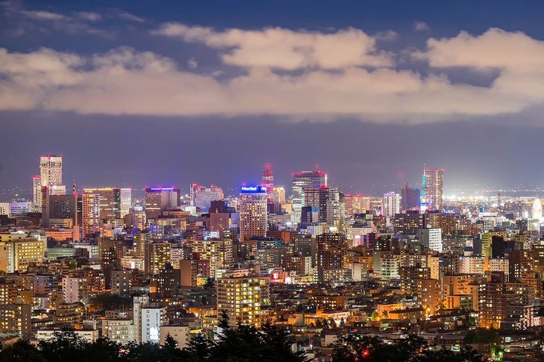

Sapporo este capitala regiunii Hokkaido și este un oraș renumit pentru iernile sale deosebite și Festivalul de Zăpadă Sapporo.
Top 10 Atracții din Sapporo:
- Parcul Odori
- Turnul Sapporo TV
- Muzeul de Bere Sapporo
- Grădina Botanică Sapporo
- Parcul Moerenuma
- Templul Hokkaido Jingu
- Strada Susukino
- Palatul Imperial Sapporo
- Fabrica de Bere Sapporo
- Mount Moiwa